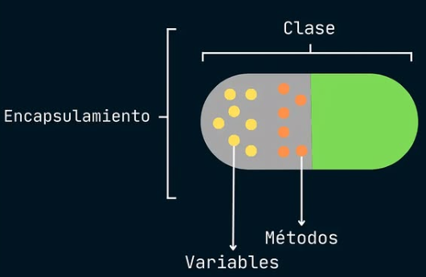

Al integrar tanto métodos como atributos dentro de clases y objetos, los estamos encapsulando. El encapsulamiento es un buen mecanismo que permite acceder a las propiedades o atributos (para leerlos o para modificarlos) sólo a través de ciertas vías, y no directamente, controlando así accesos o intentos de modificación no deseables. Consiste en ocultar (hacer privados) los atributos de la clase, y mostrar (hacer públicos) unos métodos especiales que sirvan para acceder a ellos de forma controlada (los llamados getters y setters).
public class Persona {
//atributos privados
private String nombre;
private String dni;
private int edad;
//constructor de la clase Persona
public Persona(String nombre, String dni, int edad) {
this.nombre = nombre;
this.dni = dni;
this.edad = edad;
}
//métodos getter para acceder a los atributos
public String getNombre() {
return nombre;
}
public String getDni() {
return dni;
}
public int getEdad() {
return edad;
}
//métodos setter para modificar los atributos
public void setNombre(String nombre) {
this.nombre = nombre;
}
public void setDni(String dni) {
this.dni = dni;
}
public void setEdad(int edad) {
this.edad = edad;
}
//método para mostrar la información de la persona
public void mostrarInformacion() {
System.out.println("Nombre: " + nombre);
System.out.println("DNI: " + dni);
System.out.println("Edad: " + edad);
}
}Por otro lado, mediante la ocultación separamos la implementación interna de un objeto de su uso. Así, el usuario sólo necesita saber los mensajes que necesita para comunicarse con el objeto y qué hace cada uno, pero no cómo lo hace. Por tanto, el objeto se comporta como una caja negra, consiguiendo mayor abstracción.
public class Main {
public static void main(String[] args) {
//creación de dos objetos Persona
Persona persona1 = new Persona("Juan Pérez", "12345678A", 30);
Persona persona2 = new Persona("Ana García", "87654321B", 25);
//mostrando la información de las dos personas mediante el método mostrarInformacion()
persona1.mostrarInformacion();
System.out.println();
persona2.mostrarInformacion();
//ejemplo de uso de los getters y setters
persona1.setNombre("Juan Ruiz");
System.out.println("Nuevo nombre de persona1: " + persona1.getNombre());
}
}